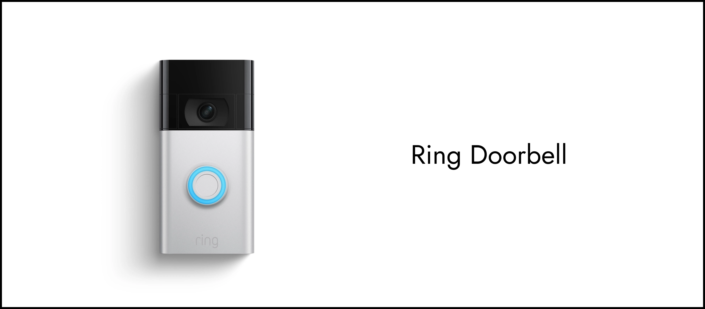
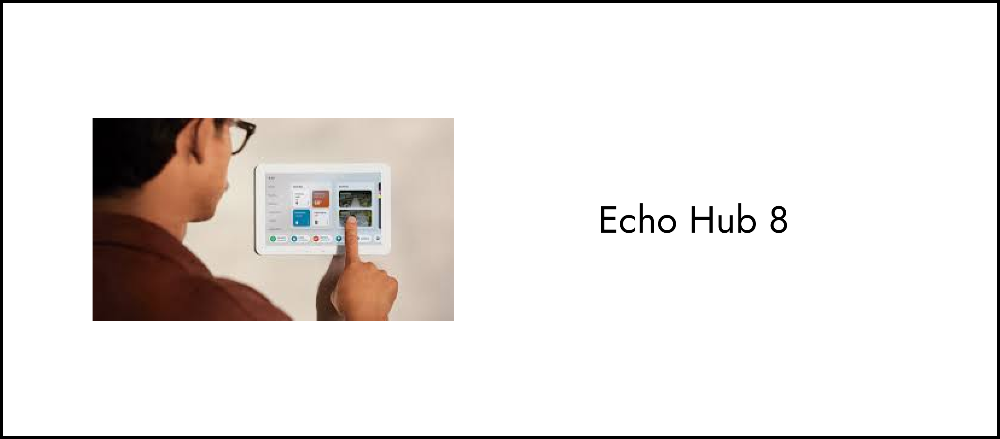
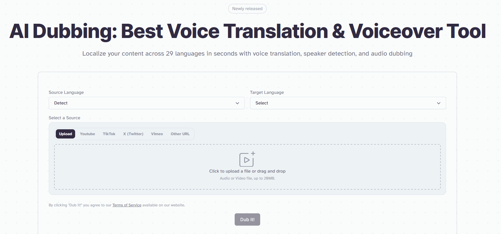
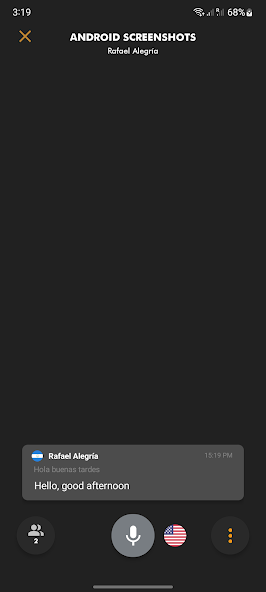

Overview
speakEasy is a solution for translator app errors. Many apps like Google Translate allow for real-time conversational voice translation. Unfortunately, mishearings are common, and one often has no idea that their speech has been mistranslated. speakEasy solves this problem by showing both parties what it heard, and letting the speaker fix any errors, before then retranslating the fixed text and even speaking it again!
Context & Challenge
Goals & Objectives
This project’s goal is to take a piece of experimental new technology and design a prototype for an interface that uses it in a new and exciting way. I researched experimental technologies, selected one, and then developed wireframes in order to iterate and eventually devlop a Figma-based prototype.
Roles & Responsibilities
This project was done solo. As an exercise in researching emergent technologies, it allowed me to better understand and embrace the process of designing for something new and unknown.
Scope
This project was completed over the course of a standard 11-week course.
Problem Statement
2-way conversational translation apps often incorrectly translate what one says, which can be extremely confusing.
Process
Finding Experimental Technology
My first steps were to research new technologies and collect 3 that I would be interested in developing an interface for.

These are Real-time translator earbuds that integrate music, phone call, and translation features. They eliminate the need for handheld translators.
This is a video doorbell that detects changes and can automatically react to changes.
This is a smart home hub device that can control multiple smart devices across a home at once.
After some deliberation, and some class input, I decided to focus on the Timekettle M3 Language Translator Earbuds for my project.
Researching Existing Interfaces
I researched Google Translate, ElevenLabs AI Dubbing, and Forum Interpreter to see what competing products were doing in the sphere of AI-assisted translation.
Google Translate

Does Well
- Internationally recognizable interface and brand
- Split screen evenly
- Can translate 2-sided conversation with the Auto feature
Does Poorly
- High latency
- Accuracy of translated words tends to be low
This is the most recognizable translation app; the Timekettle M3 can help work out the clunkiness of this app.
ElevenLabs AI Dubbing
Does Well
- Incredibly accurate AI-based translator, very high quality
- Sounds almost just like the original, just in a different language
Does Poorly
- Output is audio-only, no text
This app shows the potential of AI in translation, but lacks significant text-based output.
Forum Interpreter
Does Well
- Quickly translates text with the help of AI
- High accuracy for translations
Does Poorly
- Designed for a 1-sided lecture or conference, so does not support a conversation
- Shows the text for both languages, but highlights only one language
This product gave me a better idea of how a real-time text translator could work; the idea just needed to be moved to a 2-sided conversation.
Ideating and Wireframing
Wireframing started with creating the basic, low-fidelity critical path of the app. A user can select languages, begin a conversation, and edit a sample message that has been misheard.
My mid-fidelity wireframes consisted of adding color and text stylization.

I also developed a style guide, displaying colors, fonts, and any interactables.
For my high-fidelity and final wireframes, I expanded the critical path to insure that all navigation buttons/objects could be interacted with.
Solution
Test the final prototype here!Results
Overall, this project was an absolute success. speakEasy utilizes a new technology in a way that actively improves upon what is currently offered. My main takeaway from this project is that old ideas have to influence new ones. I was able to create a superior interface only by learning from the interfaces that had already been created. For me, this has emphasized the importance of competitor research in my other projects.